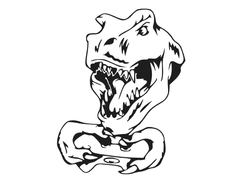
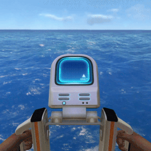

Journey Under the Ocean
An adventurous and unpredictable journey....
You are now on your spaceship, ready to land on the Kung-Planet88 and begins a exploration...
However, while landing, a crazy sci-fi laser artillery emerges out of no where and shot you down. Under the
emergency, you ride on the lifepod 5 ejected out from the exploding ship...
You fainted...
Fallen into the unknown...
You wake up and find out that all your communication system was destroyed during the explosion, however, the
water generator and aid kit were still working...
You suit up with the diving suit and climb out seeing what happen outside...
while you take look a around, you see your spaceship, "Aurora", burning and making eerie noise...
Now you have to choose whether you want to explore in the ocean swims toward your spaceship
Luckily that you have discover a peaceful zone, full of edible fish and plants...
You start collecting the resources like copper and silver in order to fix some of the broken part of your
life pod 5, as well as preparing to aboard to your spaceship again...
However, as you go on, you find a deep trench and can't even see how deep it is...
Do you want to go into the trench or just stay in the peace zone...?
Not so lucky this time, you miss the way and can't reach back to your life pod 5
Even worse, you seem to get trap in a dark and gloomy area, which make yourself feel you will get beaten by
any unknown creature in any times...
You start finding your way back, however, you begin to run off from energy and can't swim anymore...
You now have only one choice... to find your way back...
You are so lucky to find the broken part of your spaceship...
And also there are some blueprints in order for you to make more tools that help you to escape from the
planet as soon as possible...
Also luckily, you fix your communication system, however, you still can't communicate with other spaceship,
at least you can listen to the previous radio that your other peers send it to you previously...
You can choose whether you want to collect the blueprint or collect the raw materials to fix your
spaceship...
As you scan more and more blueprint in wreck around the zone, you also unlock a lot of blueprints for the
equipments...
You upgrade your oxygen system, diving suit, and also move out from the life pod 5 and build up a new
basement...
Until now, you have unlock most of the important blueprints, which you are closer and closer to escape from
this planet...
Click continue scanning to continue the story...
As you keep swimming toward the spaceship, you hear some unknown creatures' sound...
However, you choose to continuously swimming toward your target and ignore the sound you hear....
Because you want to find out if anything on the spaceship can help you escape from Kung-planet88...
Please click keeping going in order to continue your journey...
You are sooooooo lucky...
You unlock all the blueprints that required to build a rocket....
A rocket is very helpful because it allows you to carry large amount of resource for a long journey And also
help you escape from the planet...
Please click keeping going in order to continue your journey...
You successfully complete the game...
You are now able to return back to Earth and leave this creeeeeeeepy planet....
The End...
Sadly on your way back to your life pod 5, you do not watch out for your the remaining oxygen you have...
You struggling to swim up to the surface and take a breath...
However, you run out off energy and died from suffocating...
'OOOOOOOOOOOOOOOOOOOOOOOOO' HOLY MOLY. What's that big thing!!!
Should I keep going on to the spaceship and find if anything can help me escape from here...
But... there is some unknown creature over there...
What should I do...?
'OOOOOOOOOOOOOOOOOOOOOOOOOOOOOOOOPS' REAPER BEAT YOU UP WITH ONLY ONE BITE
You die and lose the game....
Better luck next time...
THE END...
'HOOOOOOOOOOOOOOOOOOOOOOOOOOOOOOOORRRRAY!!!' YOU SURVIVE ON THE PLANET FOR REST OF YOUR LIFE...
You choose to build in under-water base and start a complete new life on the planet....
You wait until one day another spaceship pass by to see your SOS signal...
THE END...
.jpg)


